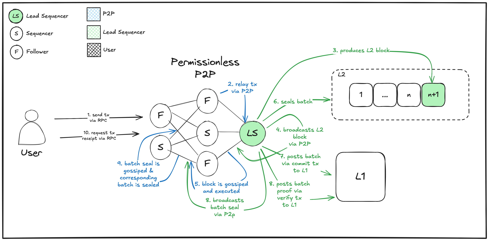

Ethrex L2 documentation
For general documentation, see:
- Getting started contains guides on setting up and interacting with an ethrex L2 stack.
- General overview for a high-level view of the ethrex L2 stack.
- Smart contracts has information on L1 and L2 smart contracts.
- Components for more detailed documentation on each off-chain component.
- Based roadmap (draft) contains ethrex's roadmap for becoming based.
For how to install our dependencies, go to their official documentation:
Developer documentation
Documentation useful for ethrex development can be found in the "Developers" section.
Getting started with ethrex L2 stack
Starting the L2
important
Make sure docker is running!
cd crates/l2make rm-db-l2 && make down- This will remove any old database stored in your computer, if present. The absolute path of libmdbx is defined by data_dir.
make init- Starts the L1 in a docker container on port
8545. - Deploys the needed contracts for the L2 on the L1.
- Starts the L2 locally on port
1729.
- Starts the L1 in a docker container on port
For more information on how to run the L2 node with the prover attached to it, the Prover Docs provides more insight.
Configuration
The program that deploys our L2 contracts outputs the addresses in a .env file, that includes environment information used by each component, automatically loaded by our makefile.
Apart from these, each component accepts multiple configuration options, which can be configured either in the .env, or with CLI flags.
More information is available in the documentation for each component.
Guides
For more information on how to perform certain operations, go to Guides.
Guides
Here we have a collection of how-to guides for common user operations.
- Moving your assets from L1 to L2 through the native bridge
- Moving your assets to L1 from L2 through the native bridge
Depositing assets into the L2
To transfer ETH from Ethereum L1 to your L2 account, you need to use the CommonBridge as explained in this section.
Prerequisites for L1 deposit
- An L1 account with sufficient ETH balance, for developing purposes you can use:
- Address:
0x8943545177806ed17b9f23f0a21ee5948ecaa776 - Private Key:
0xbcdf20249abf0ed6d944c0288fad489e33f66b3960d9e6229c1cd214ed3bbe31
- Address:
- The address of the deployed
CommonBridgecontract. - An Ethereum utility tool like Rex
Making a deposit
Making a deposit in the Bridge, using Rex, is as simple as:
# Format: rex l2 deposit <AMOUNT> <PRIVATE_KEY> <BRIDGE_ADDRESS> [L1_RPC_URL]
rex l2 deposit 50000000 0xbcdf20249abf0ed6d944c0288fad489e33f66b3960d9e6229c1cd214ed3bbe31 0x65dd6dc5df74b7e08e92c910122f91d7b2d5184f
Verifying the updated L2 balance
Once the deposit is made you can verify the balance has increase with:
# Format: rex l2 balance <ADDRESS> [RPC_URL]
rex l2 balance 0x8943545177806ed17b9f23f0a21ee5948ecaa776
For more information on what you can do with the CommonBridge see Ethrex L2 contracts.
Withdrawing assets from the L2
This section explains how to withdraw funds from the L2 through the native bridge.
Prerequisites for L2 withdrawal
- An L2 account with sufficient ETH balance, for developing purpose you can use:
- Address:
0x8943545177806ed17b9f23f0a21ee5948ecaa776 - Private Key:
0xbcdf20249abf0ed6d944c0288fad489e33f66b3960d9e6229c1cd214ed3bbe31
- Address:
- The address of the deployed
CommonBridgeL2 contract (note here that we are calling the L2 contract instead of the L1 as in the deposit case). If not specified, You can use:CommonBridgeL2:0x000000000000000000000000000000000000ffff
- An Ethereum utility tool like Rex.
Making a withdrawal
Using Rex, we simply run the rex l2 withdraw command, which uses the default CommonBridge address.
# Format: rex l2 withdraw <AMOUNT> <PRIVATE_KEY> [RPC_URL]
rex l2 withdraw 5000 0xbcdf20249abf0ed6d944c0288fad489e33f66b3960d9e6229c1cd214ed3bbe31
If the withdrawal is successful, the hash will be printed like this:
Withdrawal sent: <L2_WITHDRAWAL_TX_HASH>
...
Claiming the withdrawal
After making a withdrawal, it has to be claimed in the L1, through the L1 CommonBridge contract.
For that, we can use the Rex command rex l2 claim-withdraw, with the tx hash obtained in the previous step.
But first, it is necessary to wait for the block that includes the withdraw to be verified.
# Format: rex l2 claim-withdraw <L2_WITHDRAWAL_TX_HASH> <PRIVATE_KEY> <BRIDGE_ADDRESS> [L1_RPC_URL] [RPC_URL]
rex l2 claim-withdraw <L2_WITHDRAWAL_TX_HASH> 0xbcdf20249abf0ed6d944c0288fad489e33f66b3960d9e6229c1cd214ed3bbe31 0x65dd6dc5df74b7e08e92c910122f91d7b2d5184f
Verifying the withdrawal
Once the withdrawal is made you can verify the balance has decreased in the L2 with:
rex l2 balance 0x8943545177806ed17b9f23f0a21ee5948ecaa776
And also increased in the L1:
rex balance 0x8943545177806ed17b9f23f0a21ee5948ecaa776
General overview of the ethrex L2 stack
This document aims to explain how the Lambda ethrex L2 and all its moving parts work.
Intro
At a high level, the way an L2 works is as follows:
- There is a contract in L1 that tracks the current state of the L2. Anyone who wants to know the current state of the network need only consult this contract.
- Every once in a while, someone (usually the sequencer, but could be a decentralized network, or even anyone at all in the case of a based contestable rollup) builds a batch of new L2 blocks and publishes it to L1. We will call this the
commitL1 transaction. - For L2 batches to be considered finalized, a zero-knowledge proof attesting to the validity of the batch needs to be sent to L1, and its verification needs to pass. If it does, everyone is assured that all blocks in the batch were valid and thus the new state is. We call this the
verificationL1 transaction.
We ommited a lot of details in this high level explanation. Some questions that arise are:
- What does it mean for the L1 contract to track the state of L2? Is the entire L2 state kept on it? Isn't it really expensive to store a bunch of state on an Ethereum smart contract?
- What does the ZK proof prove exactly?
- How do we make sure that the sequencer can't do anything malicious if it's the one proposing blocks and running every transaction?
- How does someone go in and out of the L2, i.e., how do you deposit money from L1 into L2 and then withdraw it? How do you ensure this can't be tampered with? Bridges are by far the most vulnerable part of blockchains today and going in and out of the L2 totally sounds like a bridge.
Below some answers to these questions, along with an overview of all the moving parts of the system.
How do you prove state?
Now that general purpose zkVMs exist, most people have little trouble with the idea that you can prove execution. Just take the usual EVM code you wrote in Rust, compile to some zkVM target instead and you're mostly done. You can now prove it.
What's usually less clear is how you prove state. Let's say we want to prove a new L2 batch of blocks that were just built. Running the ethrex execute_block function on a Rust zkVM for all the blocks in the batch does the trick, but that only proves that you ran the VM correctly on some previous state/batch. How do you know it was the actual previous state of the L2 and not some other, modified one?
In other words, how do you ensure that:
- Every time the EVM reads from some storage slot (think an account balance, some contract's bytecode), the value returned matches the actual value present on the previous state of the network.
For this, the VM needs to take as a public input the previous state of the L2, so the prover can show that every storage slot it reads is consistent with it, and the verifier contract on L1 can check that the given public input is the actual previous state it had stored. However, we can't send the entire previous state as public input because it would be too big; this input needs to be sent on the verification transaction, and the entire L2 state does not fit on it.
To solve this, we do what we always do: instead of having the actual previous state be the public input, we build a Merkle Tree of the state and use its root as the input. Now the state is compressed into a single 32-byte value, an unforgeable representation of it; if you try to change a single bit, the root will change. This means we now have, for every L2 batch, a single hash that we use to represent it, which we call the batch commitment (we call it "commitment" and not simply "state root" because, as we'll see later, this won't just be the state root, but rather the hash of a few different values including the state root).
The flow for the prover is then roughly as follows:
- Take as public input the previous batch commitment and the next (output) batch commitment.
- Execute all blocks in the batch to prove its execution is valid. Here "execution" means more than just transaction execution; there's also header validation, transaction validation, etc. (essentially all the logic
ethrexneeds to follow when executing and adding a new block to the chain). - For every storage slot read, present and verify a merkle path from it to the previous state root (i.e. previous batch commitment).
- For every storage slot written, present and verify a merkle path from it to the next state root (i.e. next batch commitment).
As a final note, to keep the public input a 32 byte value, instead of passing the previous and next batch commitments separately, we hash the two of them and pass that. The L1 contract will then have an extra step of first taking both commitments and hashing them together to form the public input.
These two ideas will be used extensively throughout the rest of the documentation:
- Whenever we need to add some state as input, we build a merkle tree and use its root instead. Whenever we use some part of that state in some way, the prover provides merkle paths to the values involved. Sometimes, if we don't care about efficient inclusion proofs of parts of the state, we just hash the data altogether and use that instead.
- To keep the batch commitment (i.e. the value attesting to the entire state of the network) a 32 byte value, we hash the different public inputs into one. The L1 contract is given all the public inputs on
commit, checks their validity and then squashes them into one through hashing.
Reconstructing state/Data Availability
While using a merkle root as a public input for the proof works well, there is still a need to have the state on L1. If the only thing that's published to it is the state root, then the sequencer could withhold data on the state of the network. Because it is the one proposing and executing blocks, if it refuses to deliver certain data (like a merkle path to prove a withdrawal on L1), people may not have any place to get it from and get locked out of the network or some of their funds.
This is called the Data Availability problem. As discussed before, sending the entire state of the network on every new L2 batch is impossible; state is too big. As a first next step, what we could do is:
- For every new L2 batch, send as part of the
committransaction the list of transactions in the batch. Anyone who needs to access the state of the L2 at any point in time can track allcommittransactions, start executing them from the beginning and recontruct the state.
This is now feasible; if we take 200 bytes as a rough estimate for the size of a single transfer between two users (see this post for the calculation on legacy transactions) and 128 KB as a reasonable transaction size limit we get around ~650 transactions at maximum per commit transaction (we are assuming we use calldata here, blobs can increase this limit as each one is 128 KB and we could use multiple per transaction).
Going a bit further, instead of posting the entire transaction, we could just post which accounts have been modified and their new values (this includes deployed contracts and their bytecode of course). This can reduce the size a lot for most cases; in the case of a regular transfer as above, we only need to record balance updates of two accounts, which requires sending just two (address, balance) pairs, so (20 + 32) * 2 = 104 bytes, or around half as before. Some other clever techniques and compression algorithms can push down the publishing cost of this and other transactions much further.
This is called state diffs. Instead of publishing entire transactions for data availability, we only publish whatever state they modified. This is enough for anyone to reconstruct the entire state of the network.
Detailed documentation on the state diffs spec.
How do we prevent the sequencer from publishing the wrong state diffs?
Once again, state diffs have to be part of the public input. With them, the prover can show that they are equal to the ones returned by the VM after executing all blocks in the batch. As always, the actual state diffs are not part of the public input, but their hash is, so the size is a fixed 32 bytes. This hash is then part of the batch commitment. The prover then assures us that the given state diff hash is correct (i.e. it exactly corresponds to the changes in state of the executed blocks).
There's still a problem however: the L1 contract needs to have the actual state diff for data availability, not just the hash. This is sent as part of calldata of the commit transaction (actually later as a blob, we'll get to that), so the sequencer could in theory send the wrong state diff. To make sure this can't happen, the L1 contract hashes it to make sure that it matches the actual state diff hash that is included as part of the public input.
With that, we can be sure that state diffs are published and that they are correct. The sequencer cannot mess with them at all; either it publishes the correct state diffs or the L1 contract will reject its batch.
Compression
Because state diffs are compressed to save space on L1, this compression needs to be proven as well. Otherwise, once again, the sequencer could send the wrong (compressed) state diffs. This is easy though, we just make the prover run the compression and we're done.
EIP 4844 (a.k.a. Blobs)
While we could send state diffs through calldata, there is a (hopefully) cheaper way to do it: blobs. The Ethereum Cancun upgrade introduced a new type of transaction where users can submit a list of opaque blobs of data, each one of size at most 128 KB. The main purpose of this new type of transaction is precisely to be used by rollups for data availability; they are priced separately through a blob_gas market instead of the regular gas one and for all intents and purposes should be much cheaper than calldata.
Using EIP 4844, our state diffs would now be sent through blobs. While this is cheaper, there's a new problem to address with it. The whole point of blobs is that they're cheaper because they are only kept around for approximately two weeks and ONLY in the beacon chain, i.e. the consensus side. The execution side (and thus the EVM when running contracts) does not have access to the contents of a blob. Instead, the only thing it has access to is a KZG commitment of it.
This is important. If you recall, the way the L1 ensured that the state diff published by the sequencer was correct was by hashing its contents and ensuring that the hash matched the given state diff hash. With the contents of the state diff now no longer accesible by the contract, we can't do that anymore, so we need another way to ensure the correct contents of the state diff (i.e. the blob).
The solution is through a proof of equivalence between polynomial commitment schemes. The idea is as follows: proofs of equivalence allow you to show that two (polynomial) commitments point to the same underlying data. In our case, we have two commitments:
- The state diff commitment calculated by the sequencer/prover.
- The KZG commitment of the blob sent on the commit transaction (recall that the blob should just be the state diff).
If we turn the first one into a polynomial commitment, we can take a random evaluation point through Fiat Shamir and prove that it evaluates to the same value as the KZG blob commitment at that point. The commit transaction then sends the blob commitment and, through the point evaluation precompile, verifies that the given blob evaluates to that same value. If it does, the underlying blob is indeed the correct state diff.
Our proof of equivalence implementation follows Method 1 here. What we do is the following:
Prover side
-
Take the state diff being commited to as
409632-byte chunks (these will be interpreted as field elements later on, but for now we don't care). Call these chunks $d_i$, withiranging from 0 to 4095. -
Build a merkle tree with the $d_i$ as leaves. Note that we can think of the merkle root as a polynomial commitment, where the
i-th leaf is the evaluation of the polynomial on thei-th power of $\omega$, the4096-th root of unity on $F_q$, the field modulus of theBLS12-381curve. Call this polynomial $f$. This is the same polynomial that the L1 KZG blob commits to (by definition). Call the L1 blob KZG commitment $C_1$ and the merkle root we just computed $C_2$. -
Choose
xas keccak($C_1$, $C_2$) and calculate the evaluation $f(x)$; call ity. To do this calculation, because we only have the $d_i$, the easiest way to do it is through the barycentric formula. IMPORTANT: we are taking the $d_i$,x,y, and $\omega$ as elements of $F_q$, NOT the native field used by our prover. The evaluation thus is:$$y = f(x) = \dfrac{x^{4096} - 1}{4096} \sum_{i = 0}^{4095} d_i \dfrac{\omega^i}{x - \omega^i}$$
-
Set
xandyas public inputs. All the above shows the verifier on L1 that we made a polynomial commitment to the state diff, that its evaluation onxisy, and thatxwas chosen through Fiat-Shamir by hashing the two commitments.
Verifier side
- When commiting to the data on L1 send, as part of the calldata, a kzg blob commitment along with an opening proving that it evaluates to
yonx. The contract, through the point evaluation precompile, checks that both:- The commitment's hash is equal to the versioned hash for that blob.
- The evaluation is correct.
How do deposits and withdrawals work?
Deposits
TODO
Withdrawals
The mechanism for withdrawing funds from L2 back to L1 is explained in detail in "Withdrawals".
TODO: Explain it a high level maybe?
Recap
Batch Commitment
An L2 batch commitment is the hash of the following things:
- The new L2 state root.
- The state diff hash or polynomial commitments, depending on whether we are using calldata or blobs.
- The Withdrawal logs merkle root.
The public input to the proof is then the hash of the previous batch commitment and the new one.
L1 contract checks
Commit transaction
For the commit transaction, the L1 verifier contract receives the following things from the sequencer:
- The L2 batch number to be commited.
- The new L2 state root.
- The Withdrawal logs merkle root.
- The state diffs hash or polynomial commitment scheme accordingly.
The contract will then:
- Check that the batch number is the immediate successor of the last batch processed.
- Check that the state diffs are valid, either through hashing or the point evaluation precompile.
- Calculate the new batch commitment and store it.
Verify transaction
On a verification transaction, the L1 contract receives the following:
- The batch number.
- The batch proof.
The contract will then:
- Compute the proof public input from the new and previous batch commitments (both are already stored in the contract).
- Pass the proof and public inputs to the verifier and assert the proof passes.
- If the proof passes, finalize the L2 state, setting the latest batch as the given one and allowing any withdrawals for that batch to occur.
What the sequencer cannot do
- Forge Transactions: Invalid transactions (e.g. sending money from someone who did not authorize it) are not possible, since part of transaction execution requires signature verification. Every transaction has to come along with a signature from the sender. That signature needs to be verified; the L1 verifier will reject any block containing a transaction whose signature is not valid.
- Withhold State: Every L1
committransaction needs to send the corresponding state diffs for it and the contract, along with the proof, make sure that they indeed correspond to the given batch. TODO: Expand with docs on how this works. - Mint money for itself or others: The only valid protocol transaction that can mint money for a user is an L1 deposit. Every one of these mint transactions is linked to exactly one deposit transaction on L1. TODO: Expand with some docs on the exact details of how this works.
What the sequencer can do
The main thing the sequencer can do is CENSOR transactions. Any transaction sent to the sequencer could be arbitrarily dropped and not included in blocks. This is not completely enforceable by the protocol, but there is a big mitigation in the form of an escape hatch.
TODO: Explain this in detail.
State diffs
This architecture was inspired by MatterLabs' ZKsync pubdata architecture.
To provide data availability for our network, we need to publish enough information on every commit transaction to be able to reconstruct the entire state of the L2 from the beginning by querying the L1.
The data needed is:
- The nonce and balance of every
EOA. - The nonce, balance, and storage of every contract account. Note that storage here is a mapping
(U256 → U256), so there are a lot of values inside it. - The bytecode of every contract deployed on the network.
- All withdrawal Logs.
After executing a batch of L2 blocks, the EVM will return the following data:
- A list of every storage slot modified in the batch, with their previous and next values. A storage slot is a mapping
(address, slot) -> value. Note that, in a batch, there could be repeated writes to the same slot. In that case, we keep only the latest write; all the others are discarded since they are not needed for state reconstruction. - The bytecode of every newly deployed contract. Every contract deployed is then a pair
(address, bytecode). - A list of withdrawal logs (as explained in milestone 1 we already collect these and publish a merkle root of their values as calldata, but we still need to send them as the state diff).
- A list of triples
(address, nonce_increase, balance)for every modified account. Thenonce_increaseis a value that says by how much the nonce of the account was increased in the batch (this could be more than one as there can be multiple transactions for the account in the batch). The balance is just the new balance value for the account.
The full state diff sent for each batch will then be a sequence of bytes encoded as follows. We use the notation un for a sequence of n bits, so u16 is a 16-bit sequence and u96 a 96-bit one, we don't really care about signedness here; if we don't specify it, the value is of variable length and a field before it specifies it.
- The first byte is a
u8: the version header. For now it should always be one, but we reserve it for future changes to the encoding/compression format. - Next come the block header info of the last block in the batch:
- The
tx_root,receipts_rootandparent_hashareu256values. - The
gas_limit,gas_used,timestamp,block_numberandbase_fee_per_gasareu64values.
- The
- Next the
ModifiedAccountslist. The first two bytes (u16) are the amount of element it has, followed by its entries. Each entry correspond to an altered address and has the form:- The first byte is the
typeof the modification. The value is au8, constrained to the range[1; 23], computed by adding the following values:1if the balance of the EOA/contract was modified.2if the nonce of the EOA/contract was modified.4if the storage of the contract was modified.8if the contract was created and the bytecode is previously unknown.16if the contract was created and the bytecode is previously known.
- The next 20 bytes, a
u160, is the address of the modified account. - If the balance was modified (i.e.
type & 0x01 == 1), the next 32 bytes, au256, is the new balance of the account. - If the nonce was modified (i.e.
type & 0x02 == 2), the next 2 bytes, au16, is the increase in the nonce. - If the storage was modified (i.e.
type & 0x04 == 4), the next 2 bytes, au16, is the number of storage slots modified. Then come the sequence of(key_u256, new_value_u256)key value pairs with the modified slots. - If the contract was created and the bytecode is previously unknown (i.e.
type & 0x08 == 8), the next 2 bytes, au16, is the length of the bytecode in bytes. Then come the bytecode itself. - If the contract was created and the bytecode is previously known (i.e.
type & 0x10 == 16), the next 32 bytes, au256, is the hash of the bytecode of the contract. - Note that values
8and16are mutually exclusive, and iftypeis greater or equal to4, then the address is a contract. Each address can only appear once in the list.
- The first byte is the
- Next the
WithdrawalLogsfield:- First two bytes are the number of entries, then come the tuples
(to_u160, amount_u256, tx_hash_u256).
- First two bytes are the number of entries, then come the tuples
- Next the
DepositLogsfield:- First two bytes are the number of entries, then come the tuples
(to_u160, value_u256).
- First two bytes are the number of entries, then come the tuples
- In case of the only changes on an account are produced by withdrawals, the
ModifiedAccountsfor that address field must be omitted. In this case, the state diff can be computed by incrementing the nonce in one unit and subtracting the amount from the balance.
To recap, using || for byte concatenation and [] for optional parameters, the full encoding for state diffs is:
version_header_u8 ||
// Last Block Header info
tx_root_u256 || receipts_root_u256 || parent_hash_u256 ||
gas_limit_u64 || gas_used_u64 || timestamp_u64 ||
block_number_u64 || base_fee_per_gas_u64
// Modified Accounts
number_of_modified_accounts_u16 ||
(
type_u8 || address_u160 || [balance_u256] || [nonce_increase_u16] ||
[number_of_modified_storage_slots_u16 || (key_u256 || value_u256)... ] ||
[bytecode_len_u16 || bytecode ...] ||
[code_hash_u256]
)...
// Withdraw Logs
number_of_withdraw_logs_u16 ||
(to_u160 || amount_u256 || tx_hash_u256) ...
// Deposit Logs
number_of_deposit_logs_u16 ||
(to_u160 || value_u256) ...
The sequencer will then make a commitment to this encoded state diff (explained in the EIP 4844 section how this is done) and send on the commit transaction:
- Through calldata, the state diff commitment (which is part of the public input to the proof).
- Through the blob, the encoded state diff.
note
As the blob is encoded as 4096 BLS12-381 field elements, every 32-bytes chunk cannot be greater than the subgroup r size: 0x73eda753299d7d483339d80809a1d80553bda402fffe5bfeffffffff00000001. i.e., the most significant byte must be less than 0x73. To avoid conflicts, we insert a 0x00 byte before every 31-bytes chunk to ensure this condition is met.
Withdrawals
This document contains a detailed explanation of the changes needed to handle withdrawals and the withdrawal flow.
First, we need to understand the generic mechanism behind it:
L1Message
To allow generic L2->L1 messages, a system contract is added which allows sending arbitary data.
struct L1Message {
tx_hash: H256, // L2 transaction where it was included
address: Address, // Who called L1Message.sol
data: bytes32 // payload
}
This data is collected, put in a merkle tree whose root is published as part of the batch commitment.
This way, L1 contracts can access the data.
Bridging
On the L2 side, a contract burns the eth (or other assets, in the future) and emits a message to the L1 containing the details of this operation:
- Destination: L1 address that can claim the deposit
- Amount: how much was burnt
When the batch is commited, the OnChainProposer notifies the bridge which saves the message tree root.
Once the batch containing this transaction is verified, the user can claim their funds on the L1.
To do this, they compute a merkle proof for the included batch and call the L1 bridge contract.
This contract then:
- Verifies that the batch is validated
- Ensures the withdrawal wasn't already claimed
- Computes the expected leaf
- Validates that the proof leads from the leaf to the root of the message tree
- Gives the funds to the user
- Marks the withdrawl as claimed
Ethrex L2 contracts
There are two L1 contracts: OnChainProposer and CommonBridge. Both contracts are deployed using UUPS proxies, so they are upgradeables.
L1 side
CommonBridge
Allows L1<->L2 communication from L1. It both sends messages from L1 to L2 and receives messages from L2.
Deposit Functions
Simple Deposits
- Send ETH directly to the contract address using a standard transfer
- The contract's
receive()function automatically forwards funds to your identical address on L2 - No additional parameters needed
Deposits with Contract Interaction
function deposit(DepositValues calldata depositValues) public payable
Parameters:
to: Target address on L2recipient: Address that will receive the ETH on L2 (can differ from sender)gasLimit: Maximum gas for L2 executiondata: Calldata to execute on the target L2 contract
This method enables atomic operations like:
- Depositing ETH while simultaneously interacting with L2 contracts
- Funding another user's L2 account
OnChainOperator
Ensures the advancement of the L2. It is used by the operator to commit batches of blocks and verify batch proofs.
Verifier
TODO
L2 side
L1MessageSender
TODO
Upgrade the contracts
To upgrade a contract, you have to create the new contract and, as the original one, inherit from OpenZeppelin's UUPSUpgradeable. Make sure to implement the _authorizeUpgrade function and follow the proxy pattern restrictions.
Once you have the new contract, you need to do the following three steps:
-
Deploy the new contract
rex deploy <NEW_IMPLEMENTATION_BYTECODE> 0 <DEPLOYER_PRIVATE_KEY> -
Upgrade the proxy by calling the method
upgradeToAndCall(address newImplementation, bytes memory data). Thedataparameter is the calldata to call on the new implementation as an initialization, you can pass an empty stream.rex send <PROXY_ADDRESS> 0 <PRIVATE_KEY> -- 'upgradeToAndCall(address,bytes)' <NEW_IMPLEMENTATION_ADDRESS> <INITIALIZATION_CALLDATA> -
Check the proxy updated the pointed address to the new implementation. It should return the address of the new implementation:
curl http://localhost:8545 -d '{"jsonrpc": "2.0", "id": "1", "method": "eth_getStorageAt", "params": [<PROXY_ADDRESS>, "0x360894a13ba1a3210667c828492db98dca3e2076cc3735a920a3ca505d382bbc", "latest"]}'
Transfer ownership
The contracts are Ownable2Step, that means that whenever you want to transfer the ownership, the new owner have to accept it to effectively apply the change. This is an extra step of security, to avoid accidentally transfer ownership to a wrong account. You can make the transfer in these steps:
-
Start the transfer:
rex send <PROXY_ADDRESS> 0 <CURRENT_OWNER_PRIVATE_KEY> -- 'transferOwnership(address)' <NEW_OWNER_ADDRESS> -
Accept the ownership:
rex send <PROXY_ADDRESS> 0 <NEW_OWNER_PRIVATE_KEY> -- 'acceptOwnership()'
Components
Here we have documentation about each component of the ethrex L2:
- Sequencer: Describes the components and configuration of the L2 sequencer node.
- Contracts: Explains the L1 and L2 smart contracts used by the system.
- Prover: Details how block execution proofs are generated and verified using zkVMs.
- Aligned mode: Explains how to run an Ethrex L2 node in Aligned mode.
- TDX execution module: Documentation related to proving ethrex blocks using TDX.
Ethrex L2 sequencer
Components
The L2 Proposer is composed of the following components:
Block Producer
Creates Blocks with a connection to the auth.rpc port.
L1 Watcher
This component monitors the L1 for new deposits made by users. For that, it queries the CommonBridge contract on L1 at regular intervals (defined by the config file) for new DepositInitiated() events. Once a new deposit event is detected, it creates the corresponding deposit transaction on the L2.
L1 Transaction Sender (a.k.a. L1 Committer)
As the name suggests, this component sends transactions to the L1. But not any transaction, only commit and verify transactions.
Commit transactions are sent when the Proposer wants to commit to a new batch of blocks. These transactions contain the batch data to be committed in the L1.
Verify transactions are sent by the Proposer after the prover has successfully generated a proof of block execution to verify it. These transactions contains the new state root of the L2, the hash of the state diffs produced in the block, the root of the withdrawals logs merkle tree and the hash of the processed deposits.
Proof Coordinator
The Proof Coordinator is a simple TCP server that manages communication with a component called the Prover. The Prover acts as a simple TCP client that makes requests to prove a block to the Coordinator. It responds with the proof input data required to generate the proof. Then, the Prover executes a zkVM, generates the Groth16 proof, and sends it back to the Coordinator.
The Proof Coordinator centralizes the responsibility of determining which block needs to be proven next and how to retrieve the necessary data for proving. This design simplifies the system by reducing the complexity of the Prover, it only makes requests and proves blocks.
For more information about the Proof Coordinator, the Prover, and the proving process itself, see the Prover Docs.
L1 Proof Sender
The L1 Proof Sender is responsible for interacting with Ethereum L1 to manage proof verification. Its key functionalities include:
- Connecting to Ethereum L1 to send proofs for verification.
- Dynamically determine required proof types based on active verifier contracts (
PICOVERIFIER,R0VERIFIER,SP1VERIFIER). - Ensure blocks are verified in the correct order by invoking the
verify(..)function in theOnChainProposercontract. Upon successful verification, an event is emitted to confirm the block's verification status. - Operating on a configured interval defined by
proof_send_interval_ms.
Configuration
Configuration is done either by CLI flags or through environment variables. Run cargo run --release --bin ethrex --features l2 -- l2 init --help in the repository's root directory to see the available CLI flags and envs.
Ethrex L2 prover
note
The shipping/deploying process and the Prover itself are under development.
Intro
The prover consists of two main components: handling incoming proving data from the L2 proposer, specifically from the ProofCoordinator component, and the zkVM. The Prover is responsible for this first part, while the zkVM serves as a RISC-V emulator executing code specified in crates/l2/prover/zkvm/interface/guest/src.
Before the zkVM code (or guest), there is a directory called interface, which indicates that we access the zkVM through the "interface" crate.
In summary, the Prover manages the inputs from the ProofCoordinator and then "calls" the zkVM to perform the proving process and generate the groth16 ZK proof.
Workflow
The ProofCoordinator monitors requests for new jobs from the Prover, which are sent when the prover is available. Upon receiving a new job, the Prover generates the proof, after which the Prover sends the proof back to the ProofCoordinator.
sequenceDiagram
participant zkVM
participant Prover
participant ProofCoordinator
Prover->>+ProofCoordinator: ProofData::Request
ProofCoordinator-->>-Prover: ProofData::Response(batch_number, ProverInputs)
Prover->>+zkVM: Prove(ProverInputs)
zkVM-->>-Prover: Creates zkProof
Prover->>+ProofCoordinator: ProofData::Submit(batch_number, zkProof)
ProofCoordinator-->>-Prover: ProofData::SubmitAck(batch_number)
How
Dependencies:
- RISC0
curl -L https://risczero.com/install | bashrzup install cargo-risczero 1.2.0
- SP1
curl -L https://sp1up.succinct.xyz | bashsp1up --version 5.0.0
- SOLC
After installing the toolchains, a quick test can be performed to check if we have everything installed correctly.
L1 block proving
ethrex-prover is able to generate execution proofs of Ethereum Mainnet/Testnet blocks. An example binary was created for this purpose in crates/l2/prover/bench. Refer to its README for usage.
Dev Mode
To run the blockchain (proposer) and prover in conjunction, start the Prover, use the following command:
make init-prover T="prover_type (risc0,sp1) G=true"
Run the whole system with the prover - In one Machine
note
Used for development purposes.
cd crates/l2make rm-db-l2 && make down- It will remove any old database, if present, stored in your computer. The absolute path of libmdbx is defined by data_dir.
make init- Make sure you have the
solccompiler installed in your system. - Init the L1 in a docker container on port
8545. - Deploy the needed contracts for the L2 on the L1.
- Start the L2 locally on port
1729.
- Make sure you have the
- In a new terminal →
make init-prover T=(sp1,risc0).
After this initialization we should have the prover running in dev_mode → No real proofs.
GPU mode
Steps for Ubuntu 22.04 with Nvidia A4000:
- Install
docker→ using the Ubuntu apt repository- Add the
useryou are using to thedockergroup → command:sudo usermod -aG docker $USER. (needs reboot, doing it after CUDA installation) id -nGafter reboot to check if the user is in the group.
- Add the
- Install Rust
- Install RISC0
- Install CUDA for Ubuntu
- Install
CUDA Toolkit Installerfirst. Then thenvidia-opendrivers.
- Install
- Reboot
- Run the following commands:
sudo apt-get install libssl-dev pkg-config libclang-dev clang
echo 'export PATH=/usr/local/cuda/bin:$PATH' >> ~/.bashrc
echo 'export LD_LIBRARY_PATH=/usr/local/cuda/lib64:$LD_LIBRARY_PATH' >> ~/.bashrc
Run the whole system with a GPU Prover
Two servers are required: one for the Prover and another for the sequencer. If you run both components on the same machine, the Prover may consume all available resources, leading to potential stuttering or performance issues for the sequencer/node.
- The number 1 simbolizes a machine with GPU for the
Prover. - The number 2 simbolizes a machine for the
sequencer/L2 node itself.
Prover/zkvm→ prover with gpu, make sure to have all the required dependencies described at the beginning of Gpu Mode section.cd ethrex/crates/l2- You can set the following environment variables to configure the prover:
- PROVER_CLIENT_PROVER_SERVER_ENDPOINT: The address of the server where the client will request the proofs from
- PROVER_CLIENT_PROVING_TIME_MS: The amount of time to wait before requesting new data to prove
Finally, to start theProver/zkvm, run:make init-prover T=(sp1,risc0) G=true
ProofCoordinator/sequencer→ this server just needs rust installed.-
cd ethrex/crates/l2 -
Create a
.envfile with the following content:// Should be the same as ETHREX_COMMITTER_L1_PRIVATE_KEY and ETHREX_WATCHER_L2_PROPOSER_PRIVATE_KEY ETHREX_DEPLOYER_L1_PRIVATE_KEY=<private_key> // Should be the same as ETHREX_COMMITTER_L1_PRIVATE_KEY and ETHREX_DEPLOYER_L1_PRIVATE_KEY ETHREX_WATCHER_L2_PROPOSER_PRIVATE_KEY=<private_key> // Should be the same as ETHREX_WATCHER_L2_PROPOSER_PRIVATE_KEY and ETHREX_DEPLOYER_L1_PRIVATE_KEY ETHREX_COMMITTER_L1_PRIVATE_KEY=<private_key> // Should be different from ETHREX_COMMITTER_L1_PRIVATE_KEY and ETHREX_WATCHER_L2_PROPOSER_PRIVATE_KEY ETHREX_PROOF_COORDINATOR_L1_PRIVATE_KEY=<private_key> // Used to handle TCP communication with other servers from any network interface. ETHREX_PROOF_COORDINATOR_LISTEN_ADDRESS=0.0.0.0 // Set to true to randomize the salt. ETHREX_DEPLOYER_RANDOMIZE_CONTRACT_DEPLOYMENT=true // Check if the contract is deployed in your preferred network or set to `true` to deploy it. ETHREX_DEPLOYER_SP1_DEPLOY_VERIFIER=true // Check the if the contract is present on your preferred network. ETHREX_DEPLOYER_RISC0_CONTRACT_VERIFIER=<address> // It can be deployed. Check the if the contract is present on your preferred network. ETHREX_DEPLOYER_SP1_CONTRACT_VERIFIER=<address> // Set to any L1 endpoint. ETHREX_ETH_RPC_URL=<url> -
source .env
-
note
Make sure to have funds, if you want to perform a quick test 0.2[ether] on each account should be enough.
Finally, to start theproposer/l2 node, run:make rm-db-l2 && make downmake deploy-l1 && make init-l2
Configuration
Configuration is done through environment variables or CLI flags.
You can see a list of available flags by passing --help to the CLI.
The following environment variables are available to configure the Prover:
CONFIGS_PATH: The path where thePROVER_CLIENT_CONFIG_FILEis located at.PROVER_CLIENT_CONFIG_FILE: The.tomlthat contains the config for theProver.PROVER_ENV_FILE: The name of the.envthat has the parsed.tomlconfiguration.PROVER_CLIENT_PROVER_SERVER_ENDPOINT: Prover Server's Endpoint used to connect the Client to the Server.
The following environment variables are used by the ProverServer:
PROVER_SERVER_LISTEN_IP: IP used to start the Server.PROVER_SERVER_LISTEN_PORT: Port used to start the Server.PROVER_SERVER_VERIFIER_ADDRESS: The address of the account that sends the zkProofs on-chain and interacts with theOnChainProposerverify()function.PROVER_SERVER_VERIFIER_PRIVATE_KEY: The private key of the account that sends the zkProofs on-chain and interacts with theOnChainProposerverify()function.
note
The PROVER_SERVER_VERIFIER account must differ from the COMMITTER_L1 account.
How it works
The prover's sole purpose is to generate a block (or batch of blocks) execution proof. For this, ethrex-prover implements a blocks execution program and generates a proof of it using different RISC-V zkVMs (SP1, Risc0).
The prover runs a process that polls another for new jobs. The job must provide the program inputs. A proof of the program's execution with the provided inputs is generated by the prover and sent back.
Program inputs
The inputs for the blocks execution program (also called program inputs or prover inputs) are:
- the blocks to prove (header and body)
- the first block's parent header
- an execution witness
- the blocks' deposits hash
- the blocks' withdrawals Merkle root
- the blocks' state diff hash
The last three inputs are L2 specific.
These inputs are required for proof generation, but not all of them are committed as public inputs, which are needed for proof verification. The proof's public inputs (also called program outputs) will be:
- the initial state hash (from the first block's parent header)
- the final state hash (from the last block's header)
- the blocks' deposits hash
- the blocks' withdrawals Merkle root
- the blocks' state diff hash
Execution witness
The purpose of the execution witness is to allow executing the blocks without having access to the whole Ethereum state, as it wouldn't fit in a zkVM program. It contains only the state values needed during the execution.
An execution witness (represented by the ProverDB type) contains:
- all the initial state values (accounts, code, storage, block hashes) that will be read or written to during the blocks' execution.
- Merkle Patricia Trie (MPT) proofs that prove the inclusion or exclusion of each initial value in the initial world state trie.
An execution witness is created from a prior execution of the blocks. Before proving, we need to:
- execute the blocks (also called "pre-execution").
- log every initial state value accessed or updated during this execution.
- store each logged value in an in-memory key-value database (
ProverDB, implemented just using hash maps). - retrieve an MPT proof for each value, linking it (or its non-existence) to the initial state root hash.
Steps 1-3 are straightforward. Step 4 involves more complex logic due to potential issues when restructuring the pruned state trie after value removals. In sections initial state validation and final state validation we explain what are pruned tries and in which case they get restructured.
If a value is removed during block execution (meaning it existed initially but not finally), two pathological cases can occur where the witness lacks sufficient information to update the trie structure correctly:
Case 1

Here, only leaf 1 is part of the execution witness, so we lack the proof (and thus the node data) for leaf 2. After removing leaf 1, branch 1 becomes redundant. During trie restructuring, it's replaced by leaf 3, whose path is the path of leaf 2 concatenated with a prefix nibble (k) representing the choice taken at the original branch 1, and keeping leaf 2's value.
branch1 = {c_1, c_2, ..., c_k, ..., c_16} # Only c_k = hash(leaf2) is non-empty
leaf2 = {value, path}
leaf3 = {value, concat(k, path)} # New leaf replacing branch1 and leaf2
Without leaf 2's data, we cannot construct leaf 3. The solution is to fetch the final state proof for the key of leaf 2. This yields an exclusion proof containing leaf 3. By removing the prefix nibble k, we can reconstruct the original path and value of leaf 2. This process might need to be repeated if similar restructuring occurred at higher levels of the trie.
Case 2

In this case, restructuring requires information about branch/ext 2 (which could be a branch or extension node), but this node might not be in the witness. Checking the final extension node might seem sufficient to deduce branch/ext 2 in simple scenarios. However, this fails if similar restructuring occurred at higher trie levels involving more removals, as the final extension node might combine paths from multiple original branches, making it ambiguous to reconstruct the specific missing branch/ext 2 node.
The solution is to fetch the missing node directly using a debug JSON-RPC method, like debug_dbGet (or debug_accountRange and debug_storageRangeAt if using a Geth node).
note
These problems arise when creating the execution witness solely from state proofs fetched via standard JSON-RPC. In the L2 context, where we control the sequencer, we could develop a protocol to easily retrieve all necessary data more directly. However, the problems remain relevant when proving L1 blocks (e.g., for testing/benchmarking).
Blocks execution program
The program leverages ethrex-common primitives and ethrex-vm methods. ethrex-prover implements a program that uses the existing execution logic and generates a proof of its execution using a zkVM. Some L2-specific logic and input validation are added on top of the basic blocks execution.
The following sections outline the steps taken by the execution program.
Prelude 1: state trie basics
We recommend learning about Merkle Patricia Tries (MPTs) to better understand this section.
Each executed block transitions the Ethereum state from an initial state to a final state. State values are stored in MPTs:
- Each account has a Storage Trie containing its storage values.
- The World State Trie contains all account information, including each account's storage root hash (linking storage tries to the world trie).
Hashing the root node of the world state trie generates a unique identifier for a particular Ethereum state, known as the "state hash".
There are two kinds of MPT proofs:
- Inclusion proofs: Prove that
key: valueis a valid entry in the MPT with root hashh. - Exclusion proofs: Prove that
keydoes not exist in the MPT with root hashh. These proofs allow verifying that a value is included (or its key doesn't exist) in a specific state.
Prelude 2: deposits, withdrawals and state diffs
These three components are specific additions for ethrex's L2 protocol, layered on top of standard Ethereum execution logic. They each require specific validation steps within the program.
For more details, refer to Overview, Withdrawals, and State diffs.
Step 1: initial state validation
The program validates the ProverDB by iterating over each provided state value (stored in hash maps) and verifying its MPT proof against the initial state hash (obtained from the first block's parent block header input). This is the role of the verify_db() function (to link the values with the proofs). We could instead directly decode the data from the MPT proofs on each EVM read/write, although this would incur performance costs.
Having the initial state proofs (paths from the root to each relevant leaf) is equivalent to having a relevant subset of the world state trie and storage tries - a set of "pruned tries". This allows operating directly on these pruned tries (adding, removing, modifying values) during execution.
Step 2: blocks execution
After validating the initial state, the program executes the blocks. This leverages the existing ethrex execution logic used by the L2 client itself.
Step 3: final state validation
During execution, state values are updated (modified, created, or removed). After execution, the program calculates the final state by applying these state updates to the initial pruned tries.
Applying the updates results in a new world state root node for the pruned tries. Hashing this node yields the calculated final state hash. The program then verifies that this calculated hash matches the expected final state hash (from the last block header), thus validating the final state.
As mentioned earlier, removing values can sometimes require information not present in the initial witness to correctly restructure the pruned tries. The Execution witness section details this problem and its solution.
Step 4: deposit hash calculation
After execution and final state validation, the program calculates a hash encompassing all deposits made within the blocks (extracting deposit info from PrivilegedL2Transaction type transactions). This hash is committed as a public input, required for verification on the L1 bridge contract.
Step 5: withdrawals Merkle root calculation
Similarly, the program constructs a binary Merkle tree of all withdrawals initiated in the blocks and calculates its root hash. This hash is also committed as a public input. Later, L1 accounts can claim their withdrawals by providing a Merkle proof of inclusion that validates against this root hash on the L1 bridge contract.
Step 6: state diff calculation and commitment
Finally, the program calculates the state diffs (changes between initial and final state) intended for publication to L1 as blob data. It creates a commitment to this data (a Merkle root hash), which is committed as a public input. Using proof of equivalence logic within the L1 bridge contract, this Merkle commitment can be verified against the KZG commitment of the corresponding blob data.
Running Ethrex in Aligned Mode
This document explains how to run an Ethrex L2 node in Aligned mode and highlights the key differences in component behavior compared to the default mode.
How to Run
important
For this guide we assumed that there is an L1 running with all Aligned environment set.
1. Generate the SP1 ELF Program and Verification Key
Run:
cd ethrex/crates/l2
SP1_PROVER=cuda make build-prover PROVER=sp1 PROVER_CLIENT_ALIGNED=true
This will generate the SP1 ELF program and verification key under:
crates/l2/prover/zkvm/interface/sp1/out/riscv32im-succinct-zkvm-elfcrates/l2/prover/zkvm/interface/sp1/out/riscv32im-succinct-zkvm-vk
2. Deploying L1 Contracts
In a console with ethrex/crates/l2 as the current directory, run the following command:
cargo run --release --bin ethrex_l2_l1_deployer --manifest-path contracts/Cargo.toml -- \
--eth-rpc-url <L1_RPC_URL> \
--private-key <L1_PRIVATE_KEY> \
--genesis-l1-path <GENESIS_L1_PATH> \
--genesis-l2-path <GENESIS_L2_PATH> \
--contracts-path contracts \
--sp1.verifier-address 0x00000000000000000000000000000000000000aa \
--risc0.verifier-address 0x00000000000000000000000000000000000000aa \
--tdx.verifier-address 0x00000000000000000000000000000000000000aa \
--aligned.aggregator-address <ALIGNED_PROOF_AGGREGATOR_SERVICE_ADDRESS> \
--bridge-owner <ADDRESS> \
--on-chain-proposer-owner <ADDRESS> \
--private-keys-file-path <PRIVATE_KEYS_FILE_PATH> \
--sequencer-registry-owner <ADDRESS> \
--sp1-vk-path <SP1_VERIFICATION_KEY_PATH>
note
In this step we are initiallizing the OnChainProposer contract with the ALIGNED_PROOF_AGGREGATOR_SERVICE_ADDRESS and skipping the rest of verifiers.
Save the addresses of the deployed proxy contracts, as you will need them to run the L2 node.
3. Deposit funds to the AlignedBatcherPaymentService contract from the proof sender
aligned \
--network <NETWORK> \
--private_key <PROOF_SENDER_PRIVATE_KEY> \
--amount <DEPOSIT_AMOUNT>
important
Using the Aligned CLI
4. Running a node
In a console with ethrex/crates/l2 as the current directory, run the following command:
cargo run --release --manifest-path ../../Cargo.toml --bin ethrex --features "l2" -- \
l2 init \
--watcher.block-delay <WATCHER_BLOCK_DELAY> \
--network <L2_GENESIS_FILE_PATH> \
--http.port <L2_PORT> \
--http.addr <L2_RPC_ADDRESS> \
--evm levm \
--datadir <ethrex_L2_DEV_LIBMDBX> \
--l1.bridge-address <BRIDGE_ADDRESS> \
--l1.on-chain-proposer-address <ON_CHAIN_PROPOSER_ADDRESS> \
--eth.rpc-url <L1_RPC_URL> \
--block-producer.coinbase-address <BLOCK_PRODUCER_COINBASE_ADDRESS> \
--committer.l1-private-key <COMMITTER_PRIVATE_KEY> \
--proof-coordinator.l1-private-key <PROOF_COORDINATOR_PRIVATE_KEY> \
--proof-coordinator.addr <PROOF_COORDINATOR_ADDRESS> \
--aligned \
--aligned-verifier-interval-ms <ETHREX_ALIGNED_VERIFIER_INTERVAL_MS> \
--beacon_url <ETHREX_ALIGNED_BEACON_CLIENT_URL> \
--aligned-network <ETHREX_ALIGNED_NETWORK> \
--fee-estimate <ETHREX_ALIGNED_FEE_ESTIMATE> \
--aligned-sp1-elf-path <ETHREX_ALIGNED_SP1_ELF_PATH>
Aligned params explanation:
--aligned: Enables aligned mode, enforcing all required parameters.ETHREX_ALIGNED_VERIFIER_INTERVAL_MS: Interval in millisecs, that theproof_verifierwill sleep between each proof aggregation check.ETHREX_ALIGNED_BEACON_CLIENT_URL: URL of the beacon client used by the Aligned SDK to verify proof aggregations.ETHREX_ALIGNED_SP1_ELF_PATH: Path to the SP1 ELF program. This is the same file used for SP1 verification outside of Aligned mode.ETHREX_ALIGNED_NETWORKandETHREX_ALIGNED_FEE_ESTIMATE: Parameters used by the Aligned SDK.
4. Running the Prover
In a console with ethrex/crates/l2 as the current directory, run the following command:
SP1_PROVER=cuda make init-prover PROVER=sp1 PROVER_CLIENT_ALIGNED=true
How to Run Using an Aligned Dev Environment
important
This guide asumes you have already generated the SP1 ELF Program and Verification Key. See: Generate the SP1 ELF Program and Verification Key
Set Up the Aligned Environment
- Clone the Aligned repository and checkout the currently supported release:
git clone git@github.com:yetanotherco/aligned_layer.git
cd aligned_layer
git checkout tags/v0.16.1
- Edit the
aligned_layer/network_params.rsfile to send some funds to thecommitterandintegration_testaddresses:
prefunded_accounts: '{
"0xf39Fd6e51aad88F6F4ce6aB8827279cffFb92266": { "balance": "100000000000000ETH" },
"0x70997970C51812dc3A010C7d01b50e0d17dc79C8": { "balance": "100000000000000ETH" },
...
"0xa0Ee7A142d267C1f36714E4a8F75612F20a79720": { "balance": "100000000000000ETH" },
+ "0x4417092B70a3E5f10Dc504d0947DD256B965fc62": { "balance": "100000000000000ETH" },
+ "0x3d1e15a1a55578f7c920884a9943b3b35d0d885b": { "balance": "100000000000000ETH" },
}'
You can also decrease the seconds per slot in aligned_layer/network_params.rs:
# Number of seconds per slot on the Beacon chain
seconds_per_slot: 4
- Make sure you have the latest version of kurtosis installed and start the ethereum-package:
cd aligned_layer
make ethereum_package_start
To stop it run make ethereum_package_rm
- Start the batcher:
First, increase the max_proof_size in aligned_layer/config-files/config-batcher-ethereum-package.yaml max_proof_size: 41943040 for example.
cd aligned_layer
make batcher_start_ethereum_package
This is the Aligned component that receives the proofs before sending them in a batch.
warning
If you see the following error in the batcher: [ERROR aligned_batcher] Unexpected error: Space limit exceeded: Message too long: 16940713 > 16777216 modify the file aligned_layer/batcher/aligned-batcher/src/lib.rs at line 433 with the following code:
use tokio_tungstenite::tungstenite::protocol::WebSocketConfig;
let mut stream_config = WebSocketConfig::default();
stream_config.max_frame_size = None;
let ws_stream_future =
tokio_tungstenite::accept_async_with_config(raw_stream, Some(stream_config));
Initialize L2 node
- In another terminal, let's deploy the L1 contracts specifying the
AlignedProofAggregatorServicecontract address:
cd ethrex/crates/l2
cargo run --release --bin ethrex_l2_l1_deployer --manifest-path contracts/Cargo.toml -- \
--eth-rpc-url http://localhost:8545 \
--private-key 0x385c546456b6a603a1cfcaa9ec9494ba4832da08dd6bcf4de9a71e4a01b74924 \
--contracts-path contracts \
--risc0.verifier-address 0x00000000000000000000000000000000000000aa \
--sp1.verifier-address 0x00000000000000000000000000000000000000aa \
--tdx.verifier-address 0x00000000000000000000000000000000000000aa \
--aligned.aggregator-address 0xFD471836031dc5108809D173A067e8486B9047A3 \
--on-chain-proposer-owner 0x03d0a0aee676cc45bf7032649e0871927c947c8e \
--bridge-owner 0x03d0a0aee676cc45bf7032649e0871927c947c8e \
--deposit-rich \
--private-keys-file-path ../../test_data/private_keys_l1.txt \
--genesis-l1-path ../../test_data/genesis-l1-dev.json \
--genesis-l2-path ../../test_data/genesis-l2.json
You will see that some deposits fail with the following error:
2025-06-18T19:19:24.066126Z WARN ethrex_l2_l1_deployer: Failed to make deposits: Deployer EthClient error: eth_estimateGas request error: execution reverted: CommonBridge: amount to deposit is zero: CommonBridge: amount to deposit is zero
This is because not all the accounts are pre-funded from the genesis.
- Send some funds to the Aligned batcher payment service contract from the proof sender:
cd aligned_layer/batcher/aligned
cargo run deposit-to-batcher \
--network devnet \
--private_key 0x39725efee3fb28614de3bacaffe4cc4bd8c436257e2c8bb887c4b5c4be45e76d \
--amount 1ether
- Start our l2 node:
cd ethrex/crates/l2
ETHREX_PROOF_COORDINATOR_DEV_MODE=false cargo run --release --manifest-path ../../Cargo.toml --bin ethrex --features "l2,rollup_storage_libmdbx,metrics" -- l2 init --watcher.block-delay 0 --network ../../test_data/genesis-l2.json --http.port 1729 --http.addr 0.0.0.0 --evm levm --datadir dev_ethrex_l2 --l1.bridge-address <BRIDGE_ADDRESS> --l1.on-chain-proposer-address <ON_CHAIN_PROPOSER_ADDRESS> --eth.rpc-url http://localhost:8545 --block-producer.coinbase-address 0x0007a881CD95B1484fca47615B64803dad620C8d --committer.l1-private-key 0x385c546456b6a603a1cfcaa9ec9494ba4832da08dd6bcf4de9a71e4a01b74924 --proof-coordinator.l1-private-key 0x39725efee3fb28614de3bacaffe4cc4bd8c436257e2c8bb887c4b5c4be45e76d --proof-coordinator.addr 127.0.0.1 --aligned --aligned.beacon-url http://127.0.0.1:58801 --aligned-network devnet --aligned-sp1-elf-path prover/zkvm/interface/sp1/out/riscv32im-succinct-zkvm-elf
important
Set BRIDGE_ADDRESS and ON_CHAIN_PROPOSER_ADDRESS with the values printed in step 1.
Suggestion:
When running the integration test, consider increasing the commit-time-ms to 2 minutes. This helps avoid having to aggregate the proofs twice. You can do this by adding the following flag to the init-l2-no-metrics target:
--commit-time-ms 120000
- Start prover:
cd ethrex/crates/l2
SP1_PROVER=cuda make init-prover PROVER=sp1 PROVER_CLIENT_ALIGNED=true
Aggregate proofs:
After some time, you will see that the l1_proof_verifier is waiting for Aligned to aggregate the proofs:
2025-06-18T22:03:53.470356Z INFO ethrex_l2::sequencer::l1_proof_verifier: Batch 1 has not yet been aggregated by Aligned. Waiting for 5 seconds
You can aggregate them by running:
cd aligned_layer
make start_proof_aggregator AGGREGATOR=sp1
If successful, the l1_proof_verifier will print the following logs:
INFO ethrex_l2::sequencer::l1_proof_verifier: Proof for batch 1 aggregated by Aligned with commitment 0xa9a0da5a70098b00f97d96cee43867c7aa8f5812ca5388da7378454580af2fb7 and Merkle root 0xa9a0da5a70098b00f97d96cee43867c7aa8f5812ca5388da7378454580af2fb7
INFO ethrex_l2::sequencer::l1_proof_verifier: Batch 1 verified in AlignedProofAggregatorService, with transaction hash 0x731d27d81b2e0f1bfc0f124fb2dd3f1a67110b7b69473cacb6a61dea95e63321
Behavioral Differences in Aligned Mode
Prover
- Generates
Compressedproofs instead ofGroth16. - Required because Aligned currently only accepts SP1 compressed proofs.
Proof Sender
- Sends proofs to the Aligned Batcher instead of the
OnChainProposercontract. - Tracks the last proof sent using the rollup store.
Proof Verifier
- Only spawned in Aligned mode.
- Monitors whether the next proof has been aggregated by Aligned.
- Once verified, it triggers the advancement of the
OnChainProposercontract.
OnChainProposer
- Uses
verifyBatchAligned()instead ofverifyBatch(). - Delegates proof verification to the
AlignedProofAggregatorServicecontract. - Currently supports one proof per transaction.
- Future updates aim to support verifying an array of proofs in a single call.
TDX execution module
This document has documentation related to proving ethrex blocks using TDX.
Usage
note
- Running the following without an L2 running will continuously throw the error:
Error sending quote: Failed to get ProverSetupAck: Connection refused (os error 111). If you want to run this in a proper setup go to the Running section. - The quote generator runs in a QEMU, to quit it press
CTRL+A X.
On a machine with TDX support with the required setup go to quote-gen and run
make run
What is TDX?
TDX is an Intel technology implementing a Trusted Execution Environment. Such an environment allows verifying certain code was executed without being tampered with or observed.
These verifications (attestations) are known as "quotes" and contain signatures verifying the attestation was generated by a genuine processor, the measurements at the time, and a user-provided piece of data binding the proof.
The measurements are saved to four Run Time Measurement Registers (RTMR), with each RTMR respresenting a boot stage. This is analogous to how PCRs work.
Usage considerations
Do not hardcode quote verification parameters as they might change.
It's easy to silently overlook non-verified areas such as accidentally leaving login enabled, or not verifying the integrity of the state.
Boot sequence
- Firmware (OVMF here) is loaded (and hashed into RTMR[0])
- UKI is loaded (and hashed into a RTMR)
- kernel and initrd are extracted from the UKI and executed
- root partition is verified using the
roothash=value provided on the kernel cmdline and thehashpartition with the dm-verity merkle tree - root partition is mounted read-only
- (WIP) systemd executes the payload
Image build components
For reproducibility of images and hypervisor runtime we use Nix.
hypervisor.nix
This builds the modified (with patches for TDX support) qemu, and TDX-specific VBIOS (OVMF) and exports a script to run a given image (the parameters, specifically added devices, affect the measurements).
service.nix
This contains the quote-gen service. It's hash changes every time a non-gitignored file changes.
image.nix
Exports an image that uses UKI and dm-verity to generate an image where changing any component changes the hash of the bootloader (the UKI image), which is measured by the BIOS.
Running
You can enable the prover by setting ETHREX_DEPLOYER_TDX_DEPLOY_VERIFIER=true and running the sequencer in production mode (ETHREX_PROOF_COORDINATOR_DEV_MODE=false).
For development purposes, you can use the flag ETHREX_TDX_DEV_MODE=true to disable quote verification. This allows you to run the quote generator even without having TDX-capable hardware.
Ensure the proof coordinator is reachable at 172.17.0.1. You can bring up the network by first starting the L2 components:
// cd crates/l2
make init ETHREX_DEPLOYER_TDX_DEPLOY_VERIFIER=true ETHREX_PROOF_COORDINATOR_DEV_MODE=false PROOF_COORDINATOR_ADDRESS=0.0.0.0
And in another terminal, running the VM:
// cd crates/l2
make -C tee/quote-gen run
Troubleshooting
unshare: write failed /proc/self/uid_map: Operation not permitted
If you get this error when building the image, it's probably because your OS has unprivileged userns restricted by default. You can undo this by running the following commands as root, or running the build as root while disabling sandboxing.
sysctl kernel.unprivileged_userns_apparmor_policy=0
sysctl kernel.apparmor_restrict_unprivileged_userns=0
RTMR/MRTD mismatch
If any code or dependencies changed, the measurements will change.
To obtain the new measurements, first you obtain the quote by running the prover (you don't need to have the l2 running). It's output will contain Sending quote <very long hex string>.
This usually causes a RTMR1 mismatch. The easiest way to obtain the new RTMR values is by looking at the printed quote for the next 96 bytes after the RTMR0, corresponding to RTMR1||RTMR2 (48 bytes each).
More generally, you can generate a report with DCAP.verifyAndAttestOnChain(quote) which validates and extracts the report.
Look at bytes 341..485 of the output for RTMRs and bytes 149..197 for the MRTD.
For example, the file quote.example contains a quote, which can be turned into the following report:
00048100000000b0c06f000000060103000000000000000000000000005b38e33a6487958b72c3c12a938eaa5e3fd4510c51aeeab58c7d5ecee41d7c436489d6c8e4f92f160b7cad34207b00c100000000000000000000000000000000000000000000000000000000000000000000000000000000000000000000000000000000000000000000001000000000e702060000000000
91eb2b44d141d4ece09f0c75c2c53d247a3c68edd7fafe8a3520c942a604a407de03ae6dc5f87f27428b2538873118b7 # MRTD
000000000000000000000000000000000000000000000000000000000000000000000000000000000000000000000000000000000000000000000000000000000000000000000000000000000000000000000000000000000000000000000000000000000000000000000000000000000000000000000000000000000000000000000000000000000000000000000000
4f3d617a1c89bd9a89ea146c15b04383b7db7318f41a851802bba8eace5a6cf71050e65f65fd50176e4f006764a42643 # RTMR0
53827a034d1e4c7f13fd2a12aee4497e7097f15a04794553e12fe73e2ffb8bd57585e771951115a13ec4d7e6bc193038 # RTMR1
2ca1a728ff13c36195ad95e8f725bf00d7f9c5d6ed730fb8f50cccad692ab81aefc83d594819375649be934022573528 # RTMR2
000000000000000000000000000000000000000000000000000000000000000000000000000000000000000000000000 # RTMR3
39618efd10b14136ab416d6acfff8e36b23533a90000000000000000000000000000000000000000000000000000000000000000000000000000000000000000
[DRAFT] Ethrex roadmap for becoming based
note
This document is still under development, and everything stated in it is subject to change. Feedback is more than welcome.
important
This initial approach is decentralized and permissionless but not based yet. Although sequencing rights aren't currently guaranteed to the L1 proposer, there will be incentives for L1 proposers to eventually participate in the L2, moving toward Justin Drake's definition.
From the beginning, ethrex was conceived not just as an Ethereum L1 client, but also as an L2 (ZK Rollup). This means anyone will be able to use ethrex to deploy an EVM-equivalent, multi-prover (supporting SP1, RISC Zero, and TEEs) based rollup with just one command. We recently wrote a blog post where we expand this idea more in depth.
The purpose of this document is to provide a high-level overview of how ethrex will implement its based rollup feature.
State of the art
While Ethereum Foundation members are actively discussing and proposing EIPs to integrate based sequencing into Ethereum and efforts to coordinate and standardize various components needed for based rollups- like FABRIC proposes. The following table offers a high-level comparison of the based sequencing approaches before we present our proposal.
note
This table compares the different based rollups in the ecosystem based on their current development state, not their final form.
| Based Rollup | Protocol | Sequencer Election | Proof System | Preconfs | Additional Context |
|---|---|---|---|---|---|
| Taiko Alethia | Permissioned | - | Multi-proof (sgxGeth (TEE), and sgxReth (ZK/TEE)) | Yes | - |
| Based OP (Gattaca) | Permissioned | Round Robin | Single Proof (optimistic) | Yes | For phase 1, the Sequencer/Gateway is centralized. For phase 2 (current phase) the Sequencer/Gateway is permissioned. |
| Spire | Permissionless | Dutch Auction | Single Proof (optimistic) | Yes | - |
| R1 | Permissionless | Total Anarchy | Multi-proof (ZK, TEE, Guardian) | No | R1 is yet to be specified but planned to be built on top of Surge and Taiko's Stack. They're waiting until Taiko is mature enough to have preconfs |
| Surge | Permissionless | Total Anarchy | Multi-proof (ZK, TEE, Guardian) | No | Surge is built on top of Taiko Alethia but it's tuned enough to be a Stage 2 rollup. They're waiting until Taiko is mature enough to have preconfs. |
Other based rollups not mentioned will be added later.
Ethrex proposal for based sequencing
According to Justin Drake's definition of "based", being "based" implies that the L1 proposers are the ones who, at the end of the day, sequence the L2, either personally or by delegating the responsibility to a third party.
However, today, the "based" ecosystem is very immature. Despite the constant efforts of various teams, no stack is fully prepared to meet this definition. Additionally, L1 proposers do not have sufficient economic incentives to be part of the protocol.
But there's a way out. As mentioned in Spire's What is a based rollup?
The key to this definition is that sequencing is "driven" by a base layer and not controlled by a completely external party.
Following this, our proposal's main focus is decentralization and low operation cost, and we don't want to sacrifice them in favor of preconfirmations or composability.
Considering this, after researching existing approaches, we concluded that a decentralized, permissionless ticket auction is the most practical first step for ethrex's based sequencing solution.
Ultimately, we aim to align with Gattaca's model for based sequencing and collaborate with FABRIC efforts to standardize based rollups and helping interoperability.
Rogue and many upcoming rollups will be using this solution from the beginning.
Benefits of our approach
The key benefits of our approach to based sequencing are:
- Decentralization and Permissionlessness from the Get-Go: We've decentralized ethrex L2 by allowing anyone to participate in the L2 block proposal; actors willing to participate on it can do this permissionlessly, as the execution ticket auction approach we are taking provides a governance free leader election mechanism.
- Robust Censorship Resistance: By being decentralized and permissionless, and with the addition of Sequencer challenges, we increased the cost of censorship in the protocol.
- Low Operational Cost: We strived to make the sequencer operating costs as low as possible by extending the sequencing window, allowing infrequent L1 finalization for low traffic periods.
Key points
Terminology
- Ticket: non-transferable right of a Sequencer to build and commit an L2 batch. One or more are auctioned during each auction period.
- Sequencing Period: the period during which a ticket holder has sequencing rights.
- Auction Period: the period during which the auction is performed.
- Allocated Period: the set of contiguous sequencing periods allocated among the winners of the corresponding auctioning period -during an auctioning period, multiple sequencing periods are auctioned, the set of these is the allocated period.
- L2 batch: A collection of L2 blocks submitted to L1 in a single transaction.
- Commit Transaction: An L1 transaction submitted by the Lead Sequencer to commit to an L2 batch execution.
- Sequencer: An L2 node registered in the designated L1 contract.
- Lead Sequencer: The Sequencer currently authorized to build L2 blocks and post L2 batches during a specific L1 block.
- Follower: Non-Lead Sequencer nodes, which may be Sequencers awaiting leadership or passive nodes.
How it will work
As outlined earlier, sequencing rights for future blocks are allocated through periodic ticket auctions. To participate, sequencers must register and provide collateral. Each auction occurs during a designated auction period, which spans a defined range of L1 blocks. These auctions are held a certain number of blocks in advance of the allocated period.
During each auction period, a configurable number of tickets are auctioned off. Each ticket grants its holder the right to sequence transactions during one sequencing period within the allocated period. However, at the time of the auction, the specific sequencing period assigned to each ticket remains undetermined. Once the auction period ends, the sequencing periods are randomly assigned (shuffled) among the ticket holders, thereby determining which sequencing period each ticket corresponds to.
- Sequencers individually opt in before auction period
nends, providing collateral via an L1 contract. This registration is a one-time process per Sequencer. - During the auction, registered Sequencers bid for sequencing rights for a yet-to-be-revealed sequencing period within the allocated period.
- At the auction's conclusion, sequencing rights for the sequencing periods within the allocated period are assigned among the ticket holders.
- Finally, Sequencers submit L2 batch transactions to L1 during their assigned sequencing period (note: this step does not immediately follow step 3, as additional auctions and sequencing might occur in-between).
To ensure L2 liveness in this decentralized protocol, Sequencers must participate in a peer-to-peer (P2P) network. The diagram below illustrates this process:

- A User: sends a transaction to the network.
- Any node: Gossips in the P2P a received transaction. So every transaction lives in a public distributed mempool
- The Lead Sequencer: Produces an L2 block including that transaction.
- The Lead Sequencer: Broadcasts the L2 block, including the transaction, to the network via P2P.
- Any node: Executes the block, gossips it, and keeps its state up to date.
- The Lead Sequencer: Seals the batch in L2.
- The Lead Sequencer: Posts the batch to the L1 in a single transaction.
- The Lead Sequencer: Broadcasts the "batch sealed" message to the network via P2P.
- Any node: Seals the batch locally and gossips the message.
- A User: Receives a non-null receipt for the transaction.
Lead Sequencers will follow the following pipeline for L2 block building and batch commitment:
Protocol details
Downsides
Below we list some of the risks and known issues we are aware of that this protocol introduces. Some of them were highlighted thanks to the feedback of different teams that took the time to review our first draft.
- Inconsistent UX: If a Sequencer fails to include its batch submit transaction in the L1, the blocks it contains will simply be reorged out once the first batch of the next sequencer is published. Honest sequencers can avoid this by not building new batches some slots before their turn ends. The next Sequencer can, in turn, start building their first batch earlier to avoid dead times. This is similar to Taiko’s permissioned network, where sequencers coordinate to stop proposing 4 slots before their turn ends to avoid reorgs.
- Batch Stealing: Lead Sequencers that fail to publish their batches before their sequencing period ends might have their batches "stolen" by the next Lead Sequencer, which can republish those batches as their own. We can mitigate in the same way as the last point.
- Long Finalization Times: Since publishing batches to L1 is infrequent, users might experience long finalization times during low traffic periods. We can solve this by assuming a transaction in an L2 block transmitted through P2P will eventually be published to L1, and punishing Sequencers that don't include some of their blocks in a batch.
- Temporary Network Blinding: A dishonest Sequencer may blind the network if they don't gossip blocks nor publish the batches to the L1 as part of the commit transactions' calldata. While the first case alone is mitigated through an L1 syncing mechanism, if the necessary data to sync is not available we can't rely on it. In this case, the prover ensures this doesn't happen by requiring the batch as a public input to the proof verification. That way, the bad batch can't be verified, and will be reverted.
- High-Fee Transactions Hoarding: A dishonest Sequencer might not share high-fee transactions with the Lead Sequencer with the hope of processing them once it's their turn to be Lead Sequencer. This is a non-issue, since transaction senders can simply propagate their transaction themselves, either by sending it to multiple RPC providers, or to their own node.
- Front-running and Sandwiching Attacks: Lead Sequencers have the right to reorder transactions as they like and we expect they'll use this to extract MEV, including front-running and sandwiching attacks, which impact user experience. We don't have plans to address this at the protocol level, but we expect solutions to appear at the application level, same as in L1.
- No Sequencers Scenario: If a sequencing period has no elected Lead Sequencer, we establish Full Anarchy during that period, so anyone can advance the chain. This is a last resort, and we don't expect this happening in practice.
Conclusion
To preserve decentralization and permissionlessness, we chose ticket auctions for leader election, at the expense of preconfirmations and composability.
As mentioned at the beginning, this approach does not fully align with Justin Drake's definition of "based" rollups but is "based enough" to serve as a starting point. Although the current design cannot guarantee that sequencing rights are assigned exclusively to the L1 proposer for each slot, we're interested in achieving this, and will do so once the conditions are met, namely, that L1 proposer lookahead is available.
So what about "based" Ethrex tomorrow? Eventually, there will be enough incentives for L1 proposers to either run their own L2 Sequencers or delegate their L1 rights to an external one. At that stage, the auction and assignment of L2 sequencing rights will be linked to the current L1 proposer or their delegated Sequencer. Periods may also adjust as lookahead tables, such as the Deterministic Lookahead Proposal or RAID, become viable.
This proposal is intentionally minimalistic and adaptable for future refinements. How this will change and adapt to future necessities is something we don't know right now, and we don't care about it until those necessities arrive; this is Lambda's engineering philosophy.
Open questions
- Do we want this protocol to incentivize L1 proposers to join? How are we doing that? If we guarantee registered L1 proposers to sequence during their slot, what would happen with the rest of the sequencing period? If they don't pay for sequencing, why would others?
Further considerations
The following are things we are looking to tackle in the future, but which are not blockers for our current work.
- Ticket Pricing Strategies.
- Delegation Processes.
- Preconfirmations.
- Bonding.
- L1 Reorgs Handling.
References and acknowledgements
The following links, repos, and projects have been important in the development of this document, we have learned a lot from them and want to thank and acknowledge them.
Context
Intro to based rollups
- Based Rollups by Justin Drake (current accepted definition)
- Based Rollups by Spire
- Based Rollups by Taiko
- Based Rollups by Gattaca
Based rollups benefits
Based rollups + extra steps
- Based Ticketing Rollup by George Spasov
- Based Contestable Rollup by Taiko (Taiko Alethia)
- Native Based Rollup by Taiko (Taiko Gwyneth)
Misc
Execution tickets
- Execution Tickets
- Execution Tickets vs Execution Auctions
- Economic Analysis of Execution Tickets
- Beyond the Stars: An Introduction to Execution Tickets on Ethereum
Current based rollups
- Rogue (LambdaClass)
- Surge (Nethermind)
- Taiko Alethia (Taiko Labs)
- Based OP (Gattaca + Lambdaclass)
- R1
- Minimal Rollup (OpenZeppelin)
Educational sources
Developer docs
Welcome to the ethrex developer docs!
This section contains documentation on the internals of the project.
To get started quickly with the project, look into our quickstart guide.
Quickstart guide
This document covers how the code in the node is organized by looking at different end to end flows. If we start too high level we'll need to start at consensus, and if we start too low level, we'll need to start at the EVM. Let's start somewhere in the middle: importing blocks.
Importing blocks
The simplest task a node can do is import blocks offline. We would do so like this:
# Build in release mode
cargo build --release --bin ethrex
# Execute the import
./target/release/ethrex --network cmd/ethrex/networks/hoodi/genesis.json import test_data/hoodi-blocks-first-thousand.rlp
- The network argument is common to all ethrex commands. It specifies the genesis file, or a public network like holesky. This is the starting state of the blockchain.
- The import command means that this node will not start rpc endpoints or peer to peer communication. It will just read a file, parse the blocks, execute them, and save the EVM state (accounts info and storage) after each execution.
- The file is an RLP encoded file with a list of blocks.
Block execution
The CLI import subcommand executes cmd/ethrex/cli.rs:import_blocks, which can be summarized as:
#![allow(unused)] fn main() { let store = init_store(&data_dir, network).await; let blockchain = init_blockchain(evm, store.clone()); for block in parse(rlp_file) { blockchain.add_block(block) } }
The blockchain struct is our main point of interaction with our data. It contains references to key structures like our store (key-value db) and the EVM engine (knows how to execute transactions).
Adding a block is performed in crates/blockchain/blockchain.rs:add_block, and performs several tasks:
- Block execution (
execute_block).- Pre-validation. Checks that the block parent is present, that the base fee matches the parent's expectations, timestamps, header number, transaction root and withdrawals root.
- VM execution. The block contains all the transactions, which is all needed to perform a state transition. The VM has a reference to the store, so it can get the current state to apply transactions on top of it.
- Post execution validations: gas used, receipts root, requets hash.
- The VM execution does not mutate the store itself. It returns a list of all changes that happened in execution so they can be applied in any custom way.
- Post-state storage (
store_block)apply_account_updatesgets the pre-state from the store, applies the updates to get an updated post-transition-state, calculates the root and commits the new state to disk.- The state root is a merkle root, a cryptographic summary of a state. The one we just calculated is compared with the one in the block header. If it matches, it proves that your node's post-state is the same as the one the block producer reached after executing that same block.
- The block and the receipts are saved to disk.
States
In ethereum the first state is determined by the genesis file. After that, each block represents a state transition. To be formal about it, if we have a state $S$ and a block $B$, we can define $B' = f(S,B)$ as the application of a state transition function.
This means that a blockchain, internally, looks like this.
flowchart LR
Sg["Sg (genesis)"]
S1a["S1"]
S2a["S2"]
S3a["S3"]
Sg -- "f(Sg, B1)" --> S1a
S1a -- "f(S1, B2)" --> S2a
S2a -- "f(S2, B3)" --> S3a
We start from a genesis state, and each time we add a block we generate a new state. We don't only save the current state ($S_3$), we save all of them in the DB after execution. This seems wasteful, but the reason will become more obvious very soon. This means that we can get the state for any block number. We say that if we get the state for block number one, we actually are getting the state right after applying B1.
Due to the highly available nature of ethereum, sometimes multiple different blocks can be proposed for a single state. This creates what we call "soft forks".
flowchart LR
Sg["Sg (genesis)"]
S1a["S1"]
S2a["S2"]
S3a["S3"]
S1b["S1'"]
S2b["S2'"]
S3b["S3'"]
Sg -- "f(Sg, B1)" --> S1a
S1a -- "f(S1, B2)" --> S2a
S2a -- "f(S2, B3)" --> S3a
Sg -- "f(Sg, B1')" --> S1b
S1b -- "f(S1', B2')" --> S2b
S2b -- "f(S2', B3')" --> S3b
This means that for a single block number we actually have different post-states, depending on which block we executed. In turn, this means that using a block number is not a reliable way of getting a state. To fix this, what we do is calculate the hash of a block, which is unique, and use that as an identifier for both the block and its corresponding block state. In that way, if I request the DB the state for hash(B1) it understands that I'm looking for S1, whereas if I request the DB the state for hash(B1') I'm looking for S1'.
How we determine which is the right fork is called Fork choice, which is not done by the execution client, but by the consensus client. What concerns to us is that if we currently think we are on S3 and the consensus client notifies us that actually S3' is the current fork, we need to change our current state to that one. That means that we need to save every post-state in case we need to change forks. This changing of the nodes perception of the correct soft fork to a different one is called reorg.
VM - State interaction
As mentioned in the previous point, the VM execution doesn't directly mutate the store. It just calculates all necessary updates. There's an important clarification we need to go through about the starting point for that calculation.
This is a key piece of code in Blockchain.execute_block:
#![allow(unused)] fn main() { let vm_db = StoreVmDatabase::new(self.storage.clone(), block.header.parent_hash); let mut vm = Evm::new(self.evm_engine, vm_db); let execution_result = vm.execute_block(block)?; let account_updates = vm.get_state_transitions()?; }
The VM is a transient object. It is created with an engine/backend (LEVM or REVM) and a db reference. It is discarded after executing each block.
The StoreVmDatabase is just an implementation of the VmDatabase trait, using our Store (reference to a key-value store). It's an adapter between the store and the vm and allows the VM to not depend on a concrete DB.
The main piece of context a VM DB needs to be created is the parent_hash, which is the hash of the parent's block. As we mentioned previously, this hash uniquely identifies an ethereum state, so we are basically telling the VM what it's pre-state is. If we give it that, plus the block, the VM can execute the state-transition function $S' = f(S, B)$ previously mentioned.
The VmDatabase context just requires the implementation of the following methods:
#![allow(unused)] fn main() { fn get_account_info(&self, address: Address) -> Result<Option<AccountInfo>, EvmError>; fn get_storage_slot(&self, address: Address, key: H256) -> Result<Option<U256>, EvmError>; fn get_block_hash(&self, block_number: u64) -> Result<H256, EvmError>; fn get_chain_config(&self) -> Result<ChainConfig, EvmError>; fn get_account_code(&self, code_hash: H256) -> Result<Bytes, EvmError>; }
That is, it needs to know how to get information about accounts, about storage, get a block hash according to a specific number, get the config, and the account code for a specific hash.
Internally, the StoreVmDatabase implementation just calls the db for this. For example:
#![allow(unused)] fn main() { fn get_account_info(&self, address: Address) -> Result<Option<AccountInfo>, EvmError> { self.store .get_account_info_by_hash(self.block_hash, address) .map_err(|e| EvmError::DB(e.to_string())) } }
You may note that the get_account_info_by_hash receives not only the address, but also the block hash. That is because it doesn't get the account state for the "current" state, it gets it for the post-state of the parent block. That is, the pre-state for the state transition. And this makes sense: we don't want to apply a transaction anywhere, we want to apply it precisely on top of the parent's state, so that's where we'll be getting all of our state.
What is state anyway
The ethereum state is, logically, two things: accounts and their storage slots. If we were to represent them in memory, they would be something like:
#![allow(unused)] fn main() { pub struct VmState { accounts: HashMap<H256, Option<AccountState>>, storage: HashMap<H256, HashMap<H256, Option<U256>>>, } }
The accounts are indexed by the hash of their address. The storage has a two level lookup: an index by account address hash, and then an index by hashed slot. The reasons why we use hashes of the addresses and slots instead of using them directly is an implementation detail.
This flat key-value representation is what we usually call a snapshot. To write and get state, it would be enough and efficient to have a table in the db with some snapshot in the past and then the differences in each account and storage each block. This are precisely the account updates, and this is precisely what we do in our snapshots implementation.
However, we also need to be able to efficiently summarize a state, which is done using a structure called the Merkle Patricia Trie (MPT). This is a big topic, not covered by this document. A link to an in-detail document will be added soon. The most important part of it is that it's a merkle tree and we can calculate it's root/hash to summarize a whole state. When a node proposes a block, the root of the post-state is included as metadata in the header. That means that after executing a block, we can calculate the root of the resulting post-state MPT and compare it with the metadata. If it matches, we have a cryptographic proof that both nodes arrived at the same conclusion.
This means that we will need to maintain both a snapshot (for efficient reads) and a trie (for efficient summaries) for every state in the blockchain. Here's an interesting blogpost by the go ethereum (geth) team explaning this need in detail: https://blog.ethereum.org/2020/07/17/ask-about-geth-snapshot-acceleration
TODO
Imports
- Add references to our code for MPT and snapshots.
- What account updates are. What does it mean to apply them.
Live node block execution
- Engine api endpoints (fork choice updated with no attrs, new payload).
- applying fork choice and reorg.
- JSON RPC endpoints to get state.
Block building
- Mempool and P2P.
- Fork choice updated with attributes and get_payload.
- Payload building.
Syncing on node startup
- Discovery.
- Getting blocks and headers via p2p.
- Snap sync.
L2 load-tests
Testing
Load tests are available via L2 CLI and Makefile targets.
Makefile
There are currently three different load tests you can run:
make load-test
make load-test-erc20
make load-test-fibonacci
make load-test-io
The first one sends regular transfers between accounts, the second runs an EVM-heavy contract that computes fibonacci numbers, the third a heavy IO contract that writes to 100 storage slots per transaction.
Load test comparison against Reth
To run a load test on Reth, clone the repo, then run
cargo run --release -- node --chain <path_to_genesis-load-test.json> --dev --dev.block-time 5000ms --http.port 1729
to spin up a reth node in dev mode that will produce a block every 5 seconds.
Reth has a default mempool size of 10k transactions. If the load test goes too fast it will reach the limit; if you want to increase mempool limits pass the following flags:
--txpool.max-pending-txns 100000000 --txpool.max-new-txns 1000000000 --txpool.pending-max-count 100000000 --txpool.pending-max-size 10000000000 --txpool.basefee-max-count 100000000000 --txpool.basefee-max-size 1000000000000 --txpool.queued-max-count 1000000000
Changing block gas limit
By default the block gas limit is the one Ethereum mainnet uses, i.e. 30 million gas. If you wish to change it, just edit the gasLimit field in the genesis file (in the case of ethrex it's genesis-l2.json, in the case of reth it's genesis-load-test.json). Note that the number has to be passed as a hextstring.
Flamegraphs
To analyze performance during load tests (both ethrex and reth) you can use cargo flamegraph to generate a flamegraph of the node.
For ethrex, you can run the server with:
sudo -E CARGO_PROFILE_RELEASE_DEBUG=true cargo flamegraph --bin ethrex --features dev --root -- --network test_data/genesis-l2.json --http.port 1729 --dev
For reth:
sudo cargo flamegraph --profile profiling -- node --chain <path_to_genesis-load-test.json> --dev --dev.block-time 5000ms --http.port 1729
With Make Targets
There are some make targets inside the root's Makefile.
You will need two terminals:
make start-node-with-flamegraph→ This starts the ethrex client.make flamegraph→ This starts a script that sends a bunch of transactions, the script will stop ethrex when the account reaches a certain balance.
Samply
To run with samply, run
samply record ./target/profiling/reth node --chain ../ethrex/test_data/genesis-load-test.json --dev --dev.block-time 5000ms --http.port 1729
Performance optimization reports
This section includes reports on performance problems encountered and how we solved them.
Eliminating redundant RLP encoding in trie (PR #2353)
Summary
This PR addresses a performance bottleneck in our Merkle-Patricia Trie implementation caused by redundant RLP (Recursive Length Prefix) encoding operations. By refactoring the encoding logic to avoid double-encoding, we achieved 1.5x–2x faster trie insertions for workloads of 1k and 10k nodes.
Context
The trie structure is critical for Ethereum state management, and its performance directly impacts node synchronization and block processing times. RLP encoding is used extensively to serialize trie nodes for hashing and storage. Profiling revealed that a significant portion of insertion time was spent on unnecessary RLP re-encoding.
Tools & Methodology
Profiling Tools
- Samply:
- Sampled CPU usage during trie insertions, identifying RLP encoding as a hotspot (15% of runtime).
- Generated flamegraph showing
encode_to_vectaking a considerable amount of time.
- Cargo Bench:
- Provided reproducible benchmarks for trie insertions (1k/10k nodes).
Benchmark Setup
-
Code Location: Benchmarks are defined in
crates/common/trie/benches/trie_bench.rs. -
How to Run:
# Navigate to the trie crate cd crates/common/trie # Run benchmarks (includes warmup and simple statistics with cargo-bench) make bench
Hardware
- Apple M3 Max: 14-core CPU, 36GB RAM, 1TB SSD.
Benchmark Results
| Workload | Baseline (ms) | After PR #2353 (ms) |
|---|---|---|
| Insert 1k Nodes | 9.96 – 10.02 | 5.78 – 5.82 |
| Insert 10k Nodes | 111.2 – 111.6 | 67.6 – 68.6 |
Technical Breakdown
Issue: Redundant RLP Encoding
The original code calculated the length of an RLP-encoded sequence by:
- Encoding the entire structure to a temporary buffer.
- Measuring the buffer's length.
- Re-encoding the structure with the length prefix.
This resulted in two full encoding passes for each time we needed to RLP-encode a structure.
Fix: Single-Pass Encoding
We replaced the double-encoding logic with a single pass, and then appending the length as the size of the encoded buffer (number of bytes).